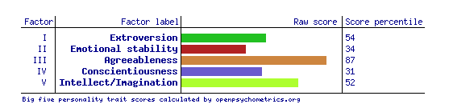

The Myers-Briggs personality test uses the psychological theory based on Katherine Briggs and her daughter Isabel Myer's findings that anyone's personality traits can be quantified and explained via a spectrum of perception of the world. (16Personlities c.2022).
It's famous for providing the test subject a simple five letter acronym to loosely demonstrate who they are as a person, with each of the five letters representing a different aspect of one's personality.
My test results can be broken down as below:
Being an ENFP-T individual, I can see that I am a mostly extraverted person, meaning that I get my energy when I am around others or within a social group, and tend to take the initiative in meeting others (16Personalities, c.2022). On top of this, being mostly intuitive, I am very future focused and will follow my gut instincts when approaching challenges and tasks.
Some shortfalls that I have with this include allowing my imagination to run wild with creativity, leaving me with little practical application or demonstrations of my imagination.
I am certainly a "Feeling" person, with this being my highest score on the test. Those who use their feelings when making decisions tend to be more compassionate and understanding of others and consider how their decisions will impact others as a main priority (16Personalities, c.2022). This demonstrates that when I make decisions, they tend to be more about me following my heart rather than the knowledge available to me at the time.
(Figure 2 - Taken from 16personalities website 2022, https://www.16personalities.com/profile)
This test is one of the most commonly used personality tests in regards to psychological profiling and summary of an individual, which uses aspects of the Big-Five Factor Markers from the IPIP, which was developed by Goldberg, Lewis R . (Open Source Psychometrics Project, 2019).
The test has fifty questions in which you must score on a ranking of 1-5, with 1=You disagreeing with the question at hand and 5=You’re agreeing with it, and so on.
Upon completion of the test, you receive a score against five separate factors and a percentile score against other test applicants.
My Results were as below:
Fig. 3 - Open Psychometrics n.d , https://openpsychometrics.org/tests/IPIP-BFFM/
My score explained:
The test results shows that I have an elevated level of agreeableness and a high raw score of Intelligence/Imagination. It is also interesting to note that this test result has put me at slightly above the norm for being extraverted in a similar fashion to the Myers-Briggs personality test, meaning I am more positive and social around others. (Open Source Psychometrics Project, 2019).
The agreeableness, however, is too high in that I have a large amount of empathy and give my trust too willingly to others. (Open Source Psychometrics Project, 2019). It also appears that my high raw score of intelligence is based on my willingness to try new things, which helps greatly when it comes to group activities as that means I'm more willing to try new ways of approaching the solution and willing to experiment with project ideas.
However, I should note that my emotional stability is scoring quite low, which may imply that I am more susceptible to stress, anxiety, and mood changes. (Open Source Psychometrics Project, 2019)
And lastly, whilst this test shows my conscientiousness as being of low value, and would outline me as being more spontaneous in nature, I would disagree mostly with this as I believe that I can maintain a solid structure when required and persist with my ambitions, else I would never have got to where I am today.
The quiz located at https://www.how-to-study.com/learning-style-assessment is a quick questionnaire of 30 questions to determine the student's preferred learning style.
Learning styles come in many fashions and archetypes, outlining the best way that each individual student learns and comprehends materials.
Upon completion of the test, I have been advised via my test results that I am predominantly a Visual Learner. I find this extremely interesting as I always believed that I was a physical learner, or an audio learner, especially for how I had to learn how to complete physical assessments and hands-on work on the farm or within the Police.
If I were to determine how this would impact me in a group situation, it would demonstrate that I like to use graphics and diagrams to help demonstrate and represent the information I provide (How-to-study.com, n.d). It would also mean that I work best watching lectures and applying what I’ve learnt from a visual medium and apply it to my tasks.
If I were to summarise my personality traits within a group activity, they might be considered as follows:
| Pros | Cons |
| I am someone who takes initiative in creating a functioning place for collaboration in a group project. | I will try please everyone by accepting ideas for the project which are not up to standard or go against the design of the project. |
| I think creatively and will formulate innovative ideas to take shape within the group. | I am more likely to react to problems, as opposed to acting early to prevent the problem. |
| I will strive to accomplish the task to the highest standard I can, regardless of how difficult the task is. | I will often let the task get in the way of my day-to-day life and will often appear stressed and on-edge, which may impact the group. |
(Figure 4 - Table of pros and cons - created by author Jake Bone 2022)
In order to get the best results out of a team project it’s vital that I ensure I approach each topic carefully and try and ensure that I am providing the work that is requested of me within the group.
I can see from within each test that I’m a team player, and one who is likely willing and able to take the wheel and plan out the task at hand. However, I need to ensure that I don’t procrastinate or overstress myself in order to give me and my team a higher chance to achieve good results.
Upon knowing how each of my teammates learn, which might be a point of discussion with my teammates upon starting our next assessment, it’ll be wise to determine how each person learns and how to cater for everyone, as I will make it my aim to ensure we’re all on the same page and progressing towards our goals together.